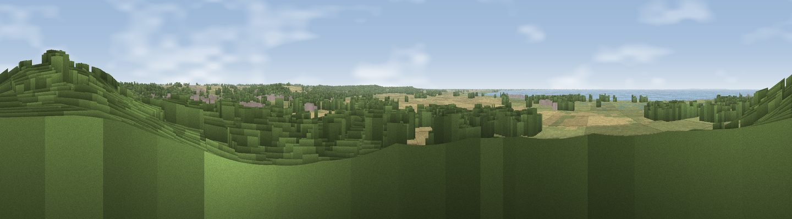

Viewpoint near Snettisham
#40954 in England · top 56% of its area beats it · near SnettishamWhere it is
The exact computed spot (TF 66875 33875). Click the marker for map links.
The view, rendered

A 360° render of this exact spot computed from the terrain model, tree cover and land cover — summer colours, afternoon light, calibrated against photographs of famous viewpoints. Real trees, hedges and buildings will differ in detail.
The panorama
Grey silhouette: terrain skyline in each direction (720 bearings, Earth curvature and refraction included). Dashed green: skyline with trees (+15 m) and buildings (+8 m) as obstacles. Blue strip: how far the ground is visible on each bearing.
Where the view opens
Wedge length = distance to the farthest visible ground on that bearing (vegetation-aware). Rings at 10, 25 and 50 km.
What fills the view
34% woodland · 30% grassland · 25% cropland · 6% water · 4% built-up · 2% wetland
Angular shares of the visible panorama (visual magnitude), not map area. Landscape diversity 0.63 (0–1 Shannon).
Key numbers
More beautiful places nearby
The staircase of upgrades: each row has a higher view potential than everything closer. Driving times are estimates from straight-line distance, calibrated against real road routing — check an actual route before setting out.
| Place | Direction | Drive | Score |
|---|---|---|---|
| Viewpoint near Sandringham | S · 6 km | ~12 min | 45.6 |
| Viewpoint near Burnham Market | ENE · 17 km | ~30 min | 49.2 |
| Viewpoint near Seacroft | NNW · 26 km | ~42 min | 55.3 |
| Viewpoint near Salthouse | E · 40 km | ~59 min | 65.4 |
| Viewpoint near East Keal | NW · 42 km | ~62 min | 66.0 |
| Viewpoint near Weybourne | E · 44 km | ~64 min | 68.3 |
| Viewpoint near Claxby | NW · 83 km | ~107 min | 71.5 |
| Broombriggs Hill | W · 117 km | ~141 min | 74.4 |
52.87646, 0.47820 · source: screening · position refined by local search. Computed location — check access rights before visiting.